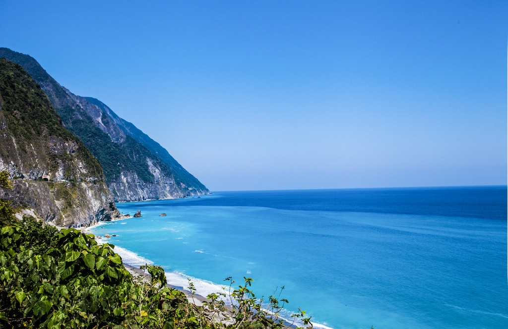

花蓮清水斷崖
Hualien Cingshuei Cliff
地址： 972花蓮縣秀林鄉清水隧道
清水斷崖位於清水山東側，自蘇花公路和平至崇德之間，綿延21公里 。其中清水山東南大斷崖尤其險峻，絕壁臨海面長達5公里，非常壯觀。當行車在山壁斷崖與無垠汪海之間，好像騰雲凌空，上有巨壁千仞，下是汪洋萬頃，真是驚險無比，也感受前人拓荒築路的艱辛，眼前所見正是一篇山海與人的壯麗詩篇。在這裡還可以欣賞太平洋海天一色，山海對峙，以及海岸呈現多層次的藍色驚艷。
現在的蘇花公路清水斷崖路段，大部分重新建過，以截彎取直及開鑿新隧道來拓寬道路，而依傍清水斷崖雄偉景色的蘇花公路臨海舊道，比較安全的路段於國家公園初期則變成是寧靜優美的觀景步道。步行於舊道路，看著寧靜的山脈，俯瞰海浪拍打岩石激起的波濤，感受陣陣的海風，宛如置身於一條上不著天，下不著地的空中走廊，令人著迷。後來臨海舊道多數路段因屬落石頻繁危險區封閉，目前僅規劃開放匯徳景觀道路(步道)，位於匯德隧道北口休憩據點舊道路段，景觀道路開放終端臨海路段徒步區，設有｢臺灣十景—清水斷崖｣石碑及觀景臺，為絕佳清水斷崖眺景點。
更多介紹：